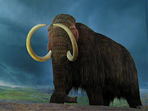

Mammuthus es un género extinto de mamíferos proboscídeos de la familia Elephantidae conocidos vulgarmente como mamuts.
Existieron desde hace aproximadamente 4,8 millones de años hasta hace apenas 3.700 años, en las épocas Plioceno (Neógeno tardío),
Pleistoceno y Holoceno (Cuaternario).12 Se han descrito numerosas especies, siendo el mamut lanudo la más conocida de todas.
Se han hallado fósiles de mamut en Norteamérica, Eurasia y África. No deben confundirse con los mastodontes, que son una familia distinta.
